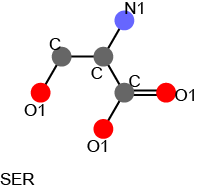

[Reference for KCOMBU]
Kawabata T. Build-up algorithm for atomic correspondence between chemical structure.
J.Chem.Info.Model., 2011, 51, 1775-1787.
The source code of the kcombu is mainly written in C, and developed and executed the linux environment (actually on the CentOS). Some additional programs for 2D graphics and statistical analyses are written in python. For the installation, you need the gcc compiler. If you want to use another compipler, please change the "Makefile" in the "src" directory. The standard installation procedures are as follows:
tar zxvf kcombu-src-[date].tar.gz
cd src
make -f Makefile.dkcombu
If the sources is successfully compiled, an execution file "dkcombu" will appear in the "../src" directory.
$dkcombu -M D -ifl [files of lib multi mol] -odes [output_descriptor_file]
$dkcombu -M D -idl [dir. of lib mol] -odes [output_descriptor_file]
$dkcombu -M D -idml [dir. of lib multi mol] -odes [output_descriptor_file]
$dkcombu -M S -Q [query_mol] -ides [input_lib_descriptor_file] -osc [result]
$dkcombu -M A -ides [input_lib_descriptor_file] -osl [output_similarity_listfile]
$dkcombu -M A -ides [input_lib_descriptor_file] -osm [output_similarity_matrix]
$dkcombu -M G -idlq [dir. of query-lib mol] -ides [input_lib_descriptor_file] -osm [result]
-osc) is described in README_lkcombu.html.
-osm) is described in README_lkcombu.html.
The atom pair desctiptor was proposed by Cahart et al.(1985).
The atom pair descriptor encodes atom pairs with the atom types and the shortest separation distance on the shortest path
( [atom type1]-[distance]-[atom type2] ).
The vector of the observed count of atom pairs is used as the descriptor.
The default atom classification is the "KCOMBU"-recommended (-at K).
It employs 12 classes for the classfication (C,C@,C1,O,O@,O1,N,N@,N1,P,S,X).
The default separation (-sep) is set to 10.
Therefore, number of atom pair pattern is 720 (=12 x 12 /2 x 10).
An example of the atom pair descriptor for a serine molecule is shown as follows.

Atom pair desctiptor vector for a serine molecule.
| Count | Atom Pair [atom type1]-[distance]-[atom type2] |
| 2 | [C ]-[1]-[C ] |
| 3 | [O1]-[1]-[C ] |
| 1 | [N1]-[1]-[C ] |
| 1 | [C ]-[2]-[C ] |
| 3 | [O1]-[2]-[C ] |
| 1 | [O1]-[2]-[O1] |
| 2 | [N1]-[2]-[C ] |
| 3 | [O1]-[3]-[C ] |
| 3 | [N1]-[3]-[O1] |
| 2 | [O1]-[4]-[O1] |
Text Style
The text format of the atom pair desctriptor is summarized as follows:
>[num_mol] [compound_filename] [num_file] [file_offset] [Nheavyatom] [molecular_formula] [oneatom_descriptor] [descriptor_num] [observed_count] [atomtype1] [separation] [atomtype2] // |
An example of text-style atom pair descriptors for two molecules (SER and ALA) is shown as follows:
#>>File_for_AtomPair_Descriptor<< #COMMAND dkcombu -M D -idl sample_dir -odes sample.des #DATE Mar 1,2013 14:30:15 #ATOMTYPE_CLASS K #MAX_ATOMTYPE 12 #TYPE_ATOMPAIR N #MAX_SEPARATION 10 #MAX_SEPARATION_CYCLIC 5 #MAX_SEPARATION_ACYCLIC 5 #MAX_ATOMPAIR_DESCRIPTOR 780 #LIBRARY_DIRECTORY sample_dir #LIBRARY_FILETYPE S #FILE_MODE TEXT #>[num_mol] [compound_filename] [num_file] [file_offset] [Nheavyatom] [molecular_formula] [oneatom_descriptor] >0 SER 0 0 7 C3_N_O3 C 3 O1 3 N1 1 14 2 C 1 C 49 3 O1 1 C 59 1 N1 1 C 92 1 C 2 C 127 3 O1 2 C 132 1 O1 2 O1 137 2 N1 2 C 205 3 O1 3 C 220 3 N1 3 O1 288 2 O1 4 O1 // >1 ALA 0 0 6 C3_N_O2 C 3 O1 2 N1 1 14 2 C 1 C 49 2 O1 1 C 59 1 N1 1 C 92 1 C 2 C 127 2 O1 2 C 132 1 O1 2 O1 137 2 N1 2 C 205 2 O1 3 C 220 2 N1 3 O1 // #NMOL_IN_LIBRARY 2 |
Binary style
The binary style of the atom pair desctriptor is rather similar to the text style.
The comment line ('>line') is described in text, whereas atom pair desctiptor (desctiptor_num + observed_count) is
encoded in binary char (1byte). The end of molecule is shown in [65536(bindary)] and '\n'.
>[num_mol] [compound_filename] [num_file] [file_offset] [Nheavyatom] [molecular_formula] [oneatom_descriptor] [descriptor_num(binary:char(1byte))][observed_count:char(1byte)] [descriptor_num(binary:char(1byte))][observed_count:char(1byte)] : [descriptor_num(binary:char(1byte))][observed_count:char(1byte)] [65536(binary:char(1byte))][\n:char(1byte)] |
An example of binary-style atom pair descriptors for two molecules (SER and ALA) is shown as follows. Binary parts of descriptors are not correctly shown (such as "^N^@^B1^@^C;^@^A\^@^A^?^@^C<84>^@^A<89>^@^BÍ^@^CÜ^@^C ^A^Bÿÿ").
#>>File_for_AtomPair_Descriptor<< #COMMAND dkcombu -M D -idl sample_dir -odes out.des -fdes B #DATE Mar 1,2013 16:54:34 #ATOMTYPE_CLASS K #MAX_ATOMTYPE 12 #TYPE_ATOMPAIR N #MAX_SEPARATION 10 #MAX_SEPARATION_CYCLIC 5 #MAX_SEPARATION_ACYCLIC 5 #MAX_ATOMPAIR_DESCRIPTOR 780 #LIBRARY_DIRECTORY sample_dir #LIBRARY_FILETYPE S #FILE_MODE BINARY #>[num_mol] [compound_filename] [num_file] [file_offset] [Nheavyatom] [molecular_formula] [oneatom_descriptor] >0 SER 0 0 7 C3_N_O3 C 3 O1 3 N1 1 ^N^@^B1^@^C;^@^A\^@^A^?^@^C<84>^@^A<89>^@^BÍ^@^CÜ^@^C ^A^Bÿÿ >1 ALA 0 0 6 C3_N_O2 C 3 O1 2 N1 1 ^N^@^B1^@^B;^@^A\^@^A^?^@^B<84>^@^A<89>^@^BÍ^@^BÜ^@^Bÿÿ #NMOL_IN_LIBRARY 2 |
[Reference for Atom pair desctiptor]
Cahart, R.E., Smith, H.S., Venkataraghavan R. Atom pairs as molecular features in structure-activity studies: definition and applications.
J.Chem.Inf.Comput.Sci., 25, 64-73 (1985).